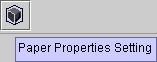
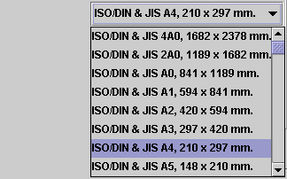
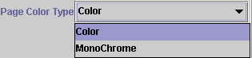
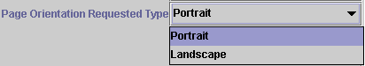
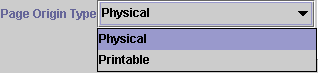
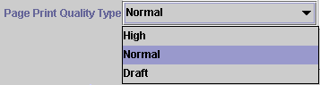
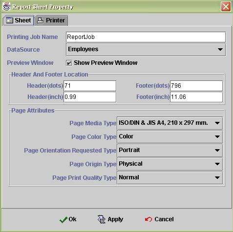
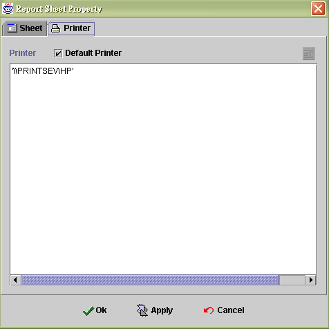

|
|
|
本頁提供給使用者建立各報表的屬性，包括所使用的資料來源，是否預覽，紙張大小，列印方式等等。
詳細內容請參考以下的說明 :
要編輯Report Sheet Property, 可以由工作列上方的圖示(如下圖)點擊後出現設定視窗.

Printing job name : 列印工作的名稱
Datasource : 列印資料的 datasource 來源
Preview window :
Show preview window : 當點選後在列印時會先出現預視畫面, 確定後再進行列印
Header(dots) : 列印位置的上限, 以像素點為單位
Footer(dots) : 列印位置的下限, 以像素點為單位
Header(inch) : 列印位置的上限, 以像英吋為單位
Footer(inch) : 列印位置的下限, 以像英吋為單位
Page media type : 各式列印尺寸模式選擇, Page media type : 選擇紙張項目(報表紙、信紙......等)，尺寸(A4、B4、Legal......等), 紙張尺寸大小共有符合國際標準規格的75種樣式供Programmer選擇使用

Page color type : 彩色列印或者是單色列印

Page orientation requested type : 列印方式為直印或橫印

Page origin type :
Physical : 依真實紙張大小的最左上角做為原點列印起。但是因為各種印表機有不同的Offest，因此若擺一個列印元件在原點上(ex : L : 0、T : 0、H : 0.5、W : 1.0)則元件的一部份會印不出來，印不出來的區域大小，須使用者依各型號的印表機去實際測試才知道
Printable : 依各型號印表機，實際可列印出的區域的左上角當原點來列印，這個設定若使用於套表列印，會因為Offset的問題造成一些困擾，因此套表列印還是建議選擇Physical

Page print quality type : 列印品質選項


Printer : 此報表列印時, 印表機的選擇
Default printer 使用這個選項, 再列印當時就不需要預覽列印, 可以直接送印 加快列印速度, 當有大量報表需要列印時就十分方便; 但在 java security 中要開放 class 來源檔的權限, 如下
C:\Program Files\Java\j2re1.4.0\lib\security\java.policy 加入下列內容
grant codeBase "http://來源IP/-" { permission java.security.AllPermission; }; grant codeBase "file:c://-" { permission java.security.AllPermission; };
Formula : 使用遠端印表機, 要填入網路印表機的路徑及印表機分享名稱

|
|
|
|
Copyright © 2001~ 2004 Probe.com.tw . All Rights Reserved.
Questions, comments, and suggestions to Service@probe.com.tw